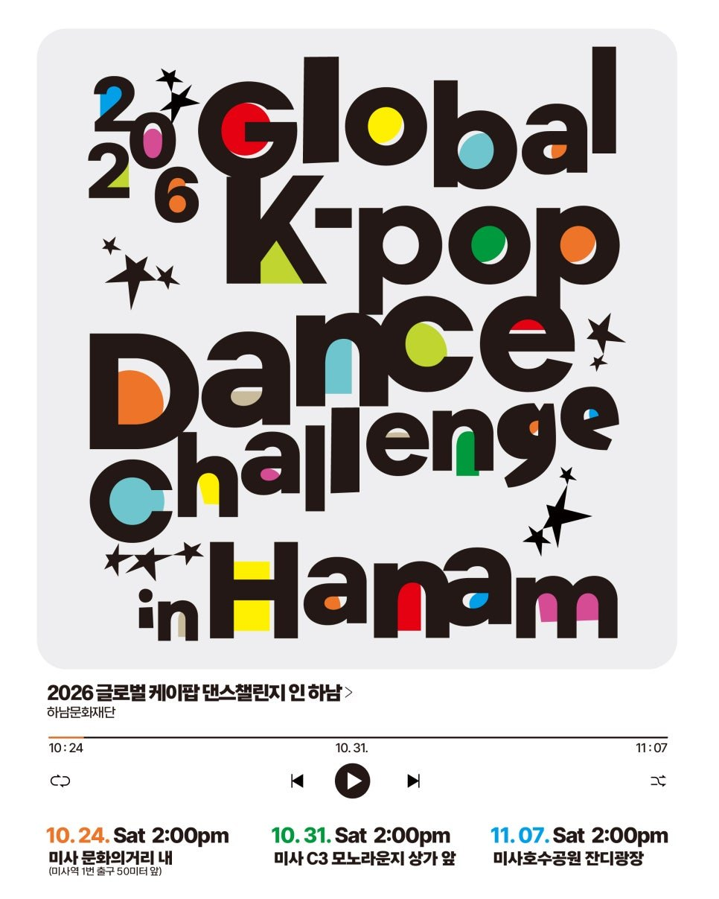
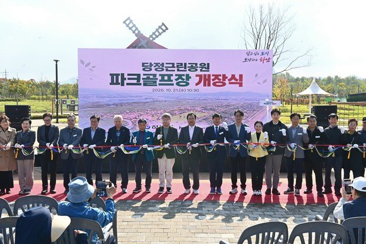
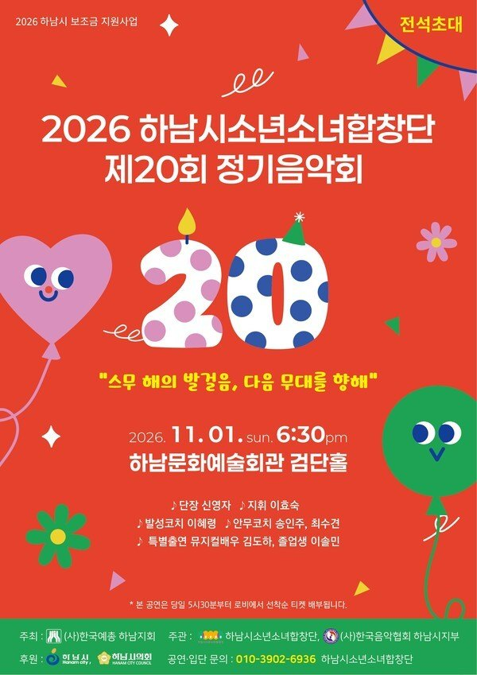
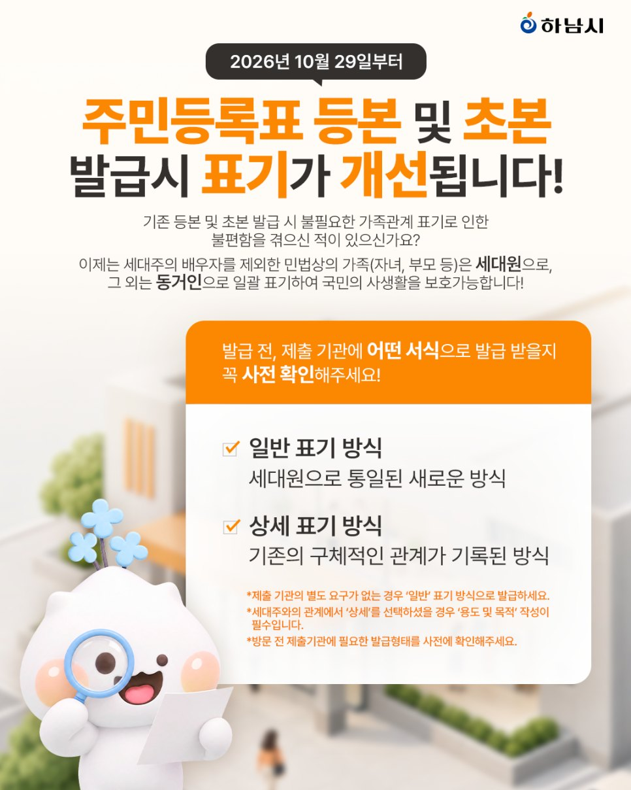

64호 | 2026년 10월 23일 발행
📌 이번 호 주요 목차
 우리동네 국회의원 이광재
우리동네 국회의원 이광재
📝 현장일지
이광재의원, "운동할 곳은 더 넓히고, 시민들의 걱정은 덜겠습니다"
• 하남시 파크골프협회·장애인단체 회장단·경기도의회 민주당 대표의원 차례로 만나 현장 목소리 청취
• 파크골프 기존 구장의 안정적 이용·시설 개선·추가 구장 조성 챙기기로
• 미사경정장 주차요금 1,000원→500원 인하 협의 내용 공유
• 장애인단체와 노후시설 개선·안정적 일자리 등 복지의 새 방향 논의
• 안광률 대표의원, 강성삼·오지훈 도의원과 재정·교통·교육 현안 논의
• 파크골프 기존 구장의 안정적 이용·시설 개선·추가 구장 조성 챙기기로
• 미사경정장 주차요금 1,000원→500원 인하 협의 내용 공유
• 장애인단체와 노후시설 개선·안정적 일자리 등 복지의 새 방향 논의
• 안광률 대표의원, 강성삼·오지훈 도의원과 재정·교통·교육 현안 논의
📌 출처: 이광재 공식 네이버 블로그
📝 현장일지
이광재의원, 국정감사서 "경제의 나침반은 국민의 삶입니다"
• 국정감사에서 '삶의 질 통계'를 시군구 단위까지 재정 운용에 반영해야 한다고 강조
• 수십 년 멈춘 근로소득세 과표·배우자 상속공제 등 세제 전반 재점검 예고
• 국부펀드·국민연금, 국내 투자로 기업 성장과 청년 일자리 늘려야
• AI 시대 '제2의 네이버·카카오' 키울 코스닥 벤처펀드 과감한 투자 제안
• 부동산은 과감한 공급 대책에 집중, "돈 쓰는 국가에서 버는 국가로"
• 수십 년 멈춘 근로소득세 과표·배우자 상속공제 등 세제 전반 재점검 예고
• 국부펀드·국민연금, 국내 투자로 기업 성장과 청년 일자리 늘려야
• AI 시대 '제2의 네이버·카카오' 키울 코스닥 벤처펀드 과감한 투자 제안
• 부동산은 과감한 공급 대책에 집중, "돈 쓰는 국가에서 버는 국가로"
📌 출처: 이광재 공식 네이버 블로그
📰 언론보도
[서울경제] 이광재의원 "잠자는 대학 부지에 주택 짓고… 출생아에 1억씩 '국민생애기본자산'"
이광재 국회 예산결산특별위원장이 서울경제 인터뷰에서 대학 부지·연기금·국유재산 등 국가가 가진 자산을 활용해 일자리와 주택을 늘리자는 구상을 밝혔습니다. 대학 부지 규제를 풀어 기업·연구소·주택이 함께 들어선 '대학도시'를 만들고, 출생아 1명당 1억 원을 국가가 투자해 20세에 약 3억 8,600만 원을 마련해 주는 '국민생애기본자산'도 제안했습니다. 중산층을 위해 상속세 일괄공제를 10억 원으로 늘리고 근로소득자의 세 부담을 낮춰야 한다고 강조했습니다.
📌 출처: 서울경제 (단독 인터뷰)
📰 하남 지역 주요 뉴스
🎓 교육/청소년
감일고 학생들 "흡연은 OFF, 문화는 ON"… 하남시에 지역 정책 직접 제안
하남 감일고등학교 학생들이 지역 문제를 직접 조사해 정책으로 제안했습니다. 21일 감일고에서 이현재 시장과 학생·학부모 등 60여 명이 참석한 가운데 '제1회 하남시와 함께하는 감일고 정책 제안 발표회'가 열렸습니다. 하남시가 9,000만 원을 지원하는 고교학력향상사업의 하나로, 7개 모둠이 교통·환경·문화·체육 개선안을 발표했습니다. 최우수상은 센서로 흡연을 감지해 음성으로 금연을 안내하는 '흡연감지 세이프 보이스', 우수상은 청소년이 직접 문화 프로그램을 기획하는 '감일 문화 ON!'이 받았습니다.
📌 출처: 시티뉴스 (한근영 기자)
🔍 시의회/행정감사
정혜영 하남시의원 "미사 워터스크린, 랜드마크보다 주민 대책 우선"… 59억 사업 집중 점검
정혜영 하남시의회 도시건설위원장이 21일 공원녹지과 행정사무감사에서 부시장을 상대로 59억 원 규모 '미사 워터스크린 사업'의 타당성을 점검했습니다. 정 위원장은 일회성 행사인 하남뮤직페스티벌 자료만으로는 상설 시설의 효과를 설명하기 어렵다며 방문객·소비 효과 분석을 요구하고, 의회가 제안한 단계적 추진·추경 10억 원 대안이 반영되지 않은 이유를 물었습니다. 주차면이 30면 안팎에 그쳐 주말·야간 공연 때 교통·소음·빛 피해가 우려된다며 주민 의견 수렴도 촉구했습니다.
📌 출처: 서울신문 서울Pn
🦺 안전/행정감사
김어진 하남시의원 "안전체험장 천장 배선 2년째 방치"… 종사자 이직률 71.3% 지적
김어진 하남시의원이 21일 안전정책과 행정사무감사에서 하남시안전체험장의 시설 안전과 종사자 처우 관리가 소홀하다고 지적했습니다. 체험장은 2024년과 2025년 두 차례 천장 누수와 배선 정비가 필요하다고 공문으로 보고했지만 추가 조치가 없었고, 현장점검에서는 천장 안 전선과 단자가 노출된 모습이 확인됐습니다. 종사자 이직률은 71.3%, 평균 근속기간은 7.3개월에 그쳤습니다. 김 의원은 긴급 보수 계획과 처우개선 방안을 마련해 의회에 보고하라고 요구했습니다.
📌 출처: 국제뉴스 (강정훈 기자)
💬 하남 맘카페 HOT 이슈
이번 주 하남 지역 맘카페(미사맘스클럽, 정다운 감일맘, 아이품애, 교산살래 등)에서 많이 오르내린 HOT 이슈 TOP 3입니다.
1️⃣ [교육] "1희망 아니면 가능성이 없어 보여요"… 유치원 입학설명회 시즌, 단설·병설·사립 지망 전략 고민 글 쏟아져
현황: 내년 3월 입학을 앞두고 유치원 입학설명회 시즌이 시작되면서 맘카페마다 유치원 선택 고민 글이 하루에도 여러 건씩 올라오고 있습니다. 미사맘스클럽에는 미사랑·미담·구산·달봄 등 단설유치원의 오전 자유놀이 운영 방식이나 7세 졸업 뒤 1~2월 등원 가능 여부를 묻는 글, 설명회에서 우선순위를 듣고 걱정이 커졌다는 후기, 1~3희망 지망 전략을 '로또'에 빗대며 막막함을 털어놓는 글이 잇따랐습니다. 정다운 감일맘에서는 신우초·단샘초 병설 비교와 셔틀버스 시간 문의가, 아이품애에서는 금강유치원 설명회 일정 문의와 하남초 병설 졸업 학부모의 추천 글이 올라왔습니다. 맞벌이 가정은 하원 시간과 방과후 과정까지 따지며 어린이집에 남을지 유치원으로 옮길지 고민하는 모습입니다.
💡 주민 포인트: 경기도 공·사립 유치원 원아 모집은 '처음학교로'(go-firstschool.go.kr)를 통해 진행됩니다. 설명회 날짜와 모집 요강은 각 유치원과 처음학교로 공지에서 직접 확인하세요.
💬 주민 반응: "다들 1희망 어디 쓰세요?"처럼 서로 정보를 나누는 분위기 속에, 원하는 유치원에 못 갈까 걱정하는 목소리가 큽니다.
📌 출처: 네이버 카페 (미사강변도시 미사맘스클럽, 정다운 감일맘, 아이품애, 맘스홀릭 베이비, 하남맘 모여라)
2️⃣ [건강] "다 미리 맞으셨나 봐요"… 독감 접종 병원·백신 찾기 문의 이어지고, 하남 60~64세 무료접종 소식도 화제
현황: 쌀쌀해진 날씨와 함께 독감 예방접종 관련 문의가 맘카페에 몰리고 있습니다. 미사맘스클럽에는 저렴하게 맞을 수 있는 병원을 묻는 글과, 고등학생 자녀가 지금 맞을 수 있는 병원을 찾는다는 글이 연달아 올라왔고, 성인용 유료 백신이 일찍 소진돼 헛걸음했다는 경험담도 이어졌습니다. 특정 제조사 백신을 놓는 병원을 묻는 글, 백신이 다시 입고됐다는 소아청소년과 안내를 공유하는 글도 눈에 띄었습니다. 아이품애에는 올해 3가 백신 접종 후기가 공유됐고, 정다운 감일맘에는 아이가 독감 확진을 받은 뒤 본인도 증상이 있어 수액 맞을 병원을 찾는다는 글이 올라왔습니다. 하남시 만 60~64세 시민도 무료접종 대상이 됐다는 소식에는 부모님 접종을 챙기려는 회원들의 관심이 모였습니다.
💡 주민 포인트: 하남시는 올해 시 자체 예산으로 독감 무료 예방접종 대상을 만 60세 이상으로 넓혀, 만 60~64세 시민도 10월 19일부터 지정 의료기관에서 무료로 맞을 수 있습니다. 가까운 지정 의료기관은 질병관리청 '예방접종도우미'(nip.kdca.go.kr)에서 찾을 수 있습니다.
💬 주민 반응: "지금 맞아도 늦지 않았나" 걱정하면서, 원하는 백신이 있는 병원 정보를 주고받는 글이 활발합니다.
📌 출처: 네이버 카페 (미사강변도시 미사맘스클럽, 아이품애, 정다운 감일맘)
3️⃣ [주거] "2027년 입주만 손꼽아 기다렸는데"… 교산신도시 첫 입주 2029년으로 밀려, 예비 입주민들 실거주 계획 다시 짠다
현황: 3기 신도시 하남 교산지구의 첫 입주가 늦어진다는 소식에 교산 관련 카페마다 걱정 섞인 글이 잇따르고 있습니다. 교산살래에는 부지조성 공정률이 공구별 3~12%대에 그친다는 기사가 공유됐고, 하남교산맘 NO1에도 2027년 입주만 기다렸는데 착공·보상 지연 소식에 마음이 막힌다는 글이 올라왔습니다. 교산라이프에서는 실거주 일정을 다시 짜야 한다는 고민과 출퇴근 교통이 어떻게 바뀔지 묻는 질문, 대토보상 지연 간담회 소식, 공공분양 소득·자산 기준 정리 글이 이어졌습니다. 하남시닷컴에는 교산 분양가와 올해 분양 계획을 묻는 글이 올라왔고, 3기 신도시 용적률 상향 검토 소식도 공유되며 공급 물량과 일정 변화에 관심이 쏠리고 있습니다.
💡 주민 포인트: 하남교산 첫 입주 시기는 당초 2027년에서 2029년 6월(A2블록 1,115가구)로 조정됐습니다. 9월 말 기준 부지조성 공정률은 1공구 12.4%, 2공구 7.7%, 3공구 3.5%이며, 청약·이사 계획은 LH 공식 공고로 확인하세요.
💬 주민 반응: 오래 기다려 온 예비 입주민들 사이에서 "언제쯤 들어갈 수 있느냐"는 허탈함과 함께, 교통·분양 일정의 구체적인 안내를 바라는 목소리가 많습니다.
📌 출처: 네이버 카페 (교산살래, 하남교산맘 NO1, 교산라이프, 하남시닷컴, 교산신도시 부동산정보)
🎭 ALL IN 하남라이프
2026년 10월 23일 기준 한눈에 보는 하남시 최신 문화·행사·교육 안내 가이드
💃 10.24·10.31·11.7 매주 토요일 | 미사문화거리·미사호수공원 · 무료
[축제] 2026 글로벌 K-POP 댄스 챌린지 in 하남 — 3주간 토요일마다, 제이블랙 심사 (하남시·하남문화재단)
"하남을 흔들어! 미사가 K-POP 무대로"
하남시와 하남문화재단이 3주 동안 매주 토요일 미사 일대에서 K-POP 공연과 랜덤플레이댄스, 글로벌 댄스 경연대회를 엽니다. 누구나 음악에 맞춰 함께 춤출 수 있는 시민 참여형 축제입니다.
🗓 10.24(토) 14:00: '하남, 전국을 흔들어' — 미사문화거리, 어라이즈(ARISE)·티아이오티(TIOT) 공연
🗓 10.31(토) 14:00: '하남, 세계를 흔들어' — 미사 C3 모노라운지 상가 앞, 글로벌 댄스팀 무대
🏆 11.7(토): 글로벌 댄스 경연대회 — 미사호수공원 잔디광장, 국내외 16개 팀 · 심사위원 제이블랙(J BLACK) · 11시 굿즈 만들기·페이스페인팅 체험, 12시 경연 시작
✅ 경연 참가: 10.25(일) 17:00까지 연장 접수 (4인 이상 팀, 장르 무관 · 하남문화재단 인스타그램 안내)
하남시와 하남문화재단이 3주 동안 매주 토요일 미사 일대에서 K-POP 공연과 랜덤플레이댄스, 글로벌 댄스 경연대회를 엽니다. 누구나 음악에 맞춰 함께 춤출 수 있는 시민 참여형 축제입니다.
🗓 10.24(토) 14:00: '하남, 전국을 흔들어' — 미사문화거리, 어라이즈(ARISE)·티아이오티(TIOT) 공연
🗓 10.31(토) 14:00: '하남, 세계를 흔들어' — 미사 C3 모노라운지 상가 앞, 글로벌 댄스팀 무대
🏆 11.7(토): 글로벌 댄스 경연대회 — 미사호수공원 잔디광장, 국내외 16개 팀 · 심사위원 제이블랙(J BLACK) · 11시 굿즈 만들기·페이스페인팅 체험, 12시 경연 시작
✅ 경연 참가: 10.25(일) 17:00까지 연장 접수 (4인 이상 팀, 장르 무관 · 하남문화재단 인스타그램 안내)

📌 출처: 하남시 공식 블로그 (하남스토리) · 하남문화재단
⛳ 신규 개장 | 당정근린공원 18홀 · 12.31까지 무료 시범운영
[생활체육] 하남 첫 공공 파크골프장, 미사동 당정근린공원에 18홀 개장 — 연말까지 무료 (위클리오늘)
"7년 규제 넘어 드디어 우리 동네 파크골프장"
하남시가 미사동 당정근린공원에 지역 첫 공공 파크골프장(18홀)을 열고 21일 개장식을 했습니다. 개발제한구역 규제를 풀어 조성했으며, 앞으로 선동둔치(36홀)·교산 체육공원(18홀)까지 모두 72홀로 늘릴 계획입니다.
📍 장소: 당정근린공원 (미사동 39 일원, 약 1만4천㎡)
💰 이용료: 2026.12.31까지 무료 시범운영
⏰ 운영: 동절기(11~2월) 09:00~18:00, 하절기 07:00~18:00 · 매주 월요일 휴장
✅ 예약: 하남도시공사 홈페이지에서 월 단위 접수 (하남시민 우선예약)
🚗 주차: 미사경정공원 주차장과 잇는 연결통로(140m)는 연내 준공 예정
하남시가 미사동 당정근린공원에 지역 첫 공공 파크골프장(18홀)을 열고 21일 개장식을 했습니다. 개발제한구역 규제를 풀어 조성했으며, 앞으로 선동둔치(36홀)·교산 체육공원(18홀)까지 모두 72홀로 늘릴 계획입니다.
📍 장소: 당정근린공원 (미사동 39 일원, 약 1만4천㎡)
💰 이용료: 2026.12.31까지 무료 시범운영
⏰ 운영: 동절기(11~2월) 09:00~18:00, 하절기 07:00~18:00 · 매주 월요일 휴장
✅ 예약: 하남도시공사 홈페이지에서 월 단위 접수 (하남시민 우선예약)
🚗 주차: 미사경정공원 주차장과 잇는 연결통로(140m)는 연내 준공 예정

📌 출처: 위클리오늘 · 사진: 하남시 제공
🎵 11.1(일) 18:30 | 하남문화예술회관 검단홀 · 전석 무료
[공연] 하남시소년소녀합창단 제20회 정기음악회 "스무 해의 발걸음, 다음 무대를 향해" (신아일보)
"아이들의 맑은 노래로 여는 11월 첫 주말"
창단 21주년을 맞은 하남시소년소녀합창단이 창작동요·키즈팝·뮤지컬 등 다양한 장르의 합창곡을 선보입니다. KBS '불후의 명곡', '누가 누가 잘하나'에도 출연한 우리 동네 어린이 합창단입니다.
🗓 일시: 2026.11.1(일) 18:30
📍 장소: 하남문화예술회관 검단홀
🎟 관람: 전석 초대(무료) · 당일 17:30부터 공연장 로비에서 선착순 입장권 배부
창단 21주년을 맞은 하남시소년소녀합창단이 창작동요·키즈팝·뮤지컬 등 다양한 장르의 합창곡을 선보입니다. KBS '불후의 명곡', '누가 누가 잘하나'에도 출연한 우리 동네 어린이 합창단입니다.
🗓 일시: 2026.11.1(일) 18:30
📍 장소: 하남문화예술회관 검단홀
🎟 관람: 전석 초대(무료) · 당일 17:30부터 공연장 로비에서 선착순 입장권 배부

📌 출처: 신아일보 · 포스터: 하남시소년소녀합창단
🏛️ 공공기관 소식지
2026년 10월 23일 기준 하남시 공공기관 주요 공고·신청 안내입니다.
💳 하남시 | 11.2(월)~11.30(월) 충전분 · 할인율 8%
2026년 11월 지역사랑상품권(하머니) 8% 할인 안내
"20만 원 충전하면 내 돈은 18만 4천 원"
11월 한 달 동안 하머니를 충전하면 충전액의 8%를 하남시가 인센티브로 더해 줍니다. 예산이 떨어지면 조기 종료되니 서두르는 것이 좋습니다.
📝 기간: 2026. 11. 2.(월) 0시 ~ 11. 30.(월) 충전분 (예산 소진 시 조기 종료)
💰 혜택: 할인율 8%, 충전한도 20만 원 (한도를 넘긴 충전분은 할인 미적용)
🧾 소득공제: '직불카드' 항목으로 30% (신청 전 사용액은 소급 불가)
✅ 구매: '경기지역화폐' 앱에서 카드 신청·등록 후 충전, 또는 관내 농협·MG하남새마을금고·신협·축협·중부농협·통영수협 방문 (신분증·휴대폰 지참)
☎️ 문의: 031-790-6034 (하남시 지역경제과 상권지원팀)
11월 한 달 동안 하머니를 충전하면 충전액의 8%를 하남시가 인센티브로 더해 줍니다. 예산이 떨어지면 조기 종료되니 서두르는 것이 좋습니다.
📝 기간: 2026. 11. 2.(월) 0시 ~ 11. 30.(월) 충전분 (예산 소진 시 조기 종료)
💰 혜택: 할인율 8%, 충전한도 20만 원 (한도를 넘긴 충전분은 할인 미적용)
🧾 소득공제: '직불카드' 항목으로 30% (신청 전 사용액은 소급 불가)
✅ 구매: '경기지역화폐' 앱에서 카드 신청·등록 후 충전, 또는 관내 농협·MG하남새마을금고·신협·축협·중부농협·통영수협 방문 (신분증·휴대폰 지참)
☎️ 문의: 031-790-6034 (하남시 지역경제과 상권지원팀)
📌 출처: 하남시 (지역경제과 상권지원팀)
🏪 하남시 | 음식점 3종·미용업 5종 · 시청 한 번 방문
영업신고·사업자등록, 이제 하남시청 한 곳에서 한 번에 — 통합신청 서비스 시행
"두 곳 가던 길, 한 곳으로"
음식점이나 미용실을 새로 여는 분은 이제 시청과 세무서를 따로 찾지 않아도 됩니다. 하남시청에 영업신고서와 사업자등록 신청서를 함께 내면 영업신고증은 시청에서, 사업자등록증은 세무서에서 발급됩니다.
👥 대상: 일반음식점·휴게음식점·제과점 / 일반·피부·네일·화장분장·종합 미용업
📄 서류(음식점): 임대차계약서, 식품위생교육 이수증(신규 6시간), 건강진단 결과
📄 서류(미용업): 임대차계약서, 미용사 면허증, 위생교육 수료증(3시간)
🧾 사업자등록증: 관할 세무서 또는 홈택스(온라인)에서 발급 · 업종에 따라 추가 서류가 필요할 수 있음
☎️ 문의: 031-790-6231 (하남시 식품위생농업과 위생허가팀)
음식점이나 미용실을 새로 여는 분은 이제 시청과 세무서를 따로 찾지 않아도 됩니다. 하남시청에 영업신고서와 사업자등록 신청서를 함께 내면 영업신고증은 시청에서, 사업자등록증은 세무서에서 발급됩니다.
👥 대상: 일반음식점·휴게음식점·제과점 / 일반·피부·네일·화장분장·종합 미용업
📄 서류(음식점): 임대차계약서, 식품위생교육 이수증(신규 6시간), 건강진단 결과
📄 서류(미용업): 임대차계약서, 미용사 면허증, 위생교육 수료증(3시간)
🧾 사업자등록증: 관할 세무서 또는 홈택스(온라인)에서 발급 · 업종에 따라 추가 서류가 필요할 수 있음
☎️ 문의: 031-790-6231 (하남시 식품위생농업과 위생허가팀)
📌 출처: 하남시 공식 블로그 (하남스토리)
📄 하남시 | 10.29(목)부터 · 주민등록표 등본·초본
10월 29일부터 주민등록표 등·초본 가족관계 표기 개선 — 자녀·부모는 '세대원'으로
"등본 한 장에 가족관계가 다 드러나지 않도록"
주민등록표 등본·초본을 뗄 때 불필요한 개인정보 노출을 줄이도록 표기 방식이 바뀝니다. 세대주의 배우자를 뺀 민법상 가족(자녀·부모 등)은 '세대원'으로, 그 밖의 사람은 '동거인'으로 일괄 표기됩니다.
📝 시행: 2026. 10. 29.(목)부터
✅ 일반 표기: '세대원'으로 통일된 새 방식 (제출기관의 별도 요구가 없으면 일반으로 발급)
🔎 상세 표기: 기존처럼 구체적인 관계를 기재, 선택 시 '용도 및 목적' 작성 필수
💡 꿀팁: 발급 전 제출할 기관에 어떤 서식이 필요한지 꼭 확인하세요
주민등록표 등본·초본을 뗄 때 불필요한 개인정보 노출을 줄이도록 표기 방식이 바뀝니다. 세대주의 배우자를 뺀 민법상 가족(자녀·부모 등)은 '세대원'으로, 그 밖의 사람은 '동거인'으로 일괄 표기됩니다.
📝 시행: 2026. 10. 29.(목)부터
✅ 일반 표기: '세대원'으로 통일된 새 방식 (제출기관의 별도 요구가 없으면 일반으로 발급)
🔎 상세 표기: 기존처럼 구체적인 관계를 기재, 선택 시 '용도 및 목적' 작성 필수
💡 꿀팁: 발급 전 제출할 기관에 어떤 서식이 필요한지 꼭 확인하세요

📌 출처: 하남시 공식 블로그 (하남스토리)
© 2026 우리동네 진짜일꾼 이광재